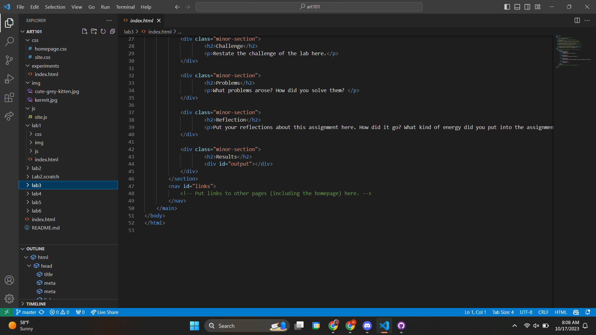
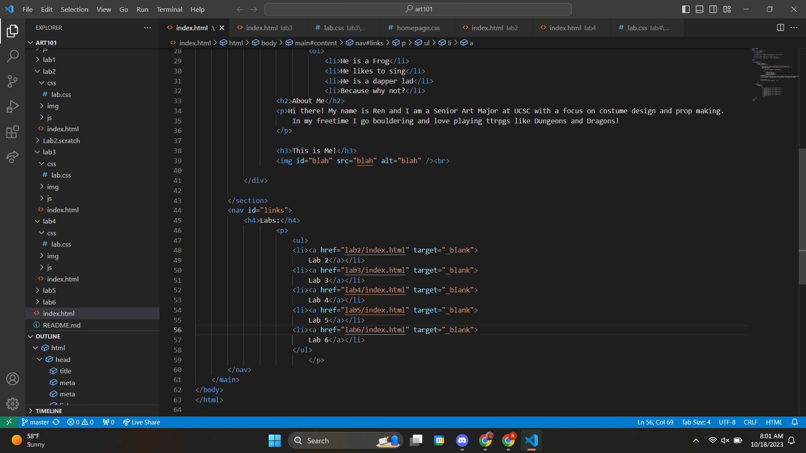
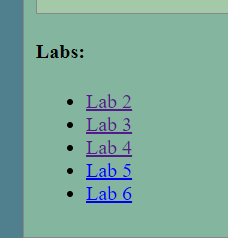
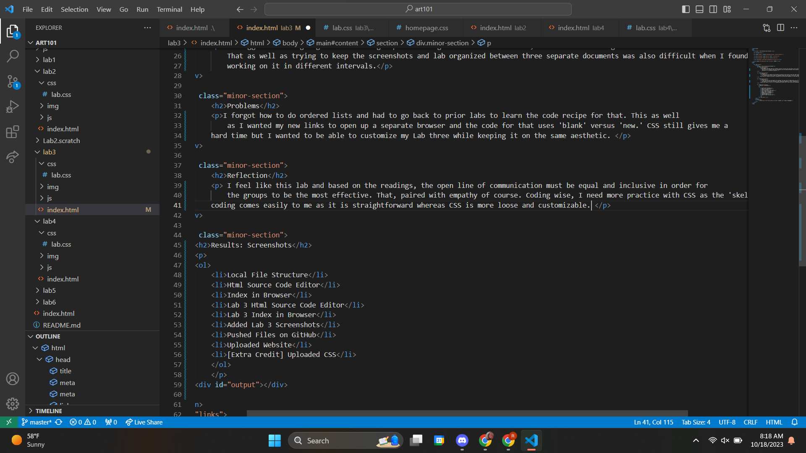
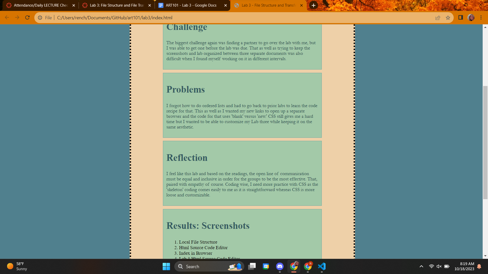
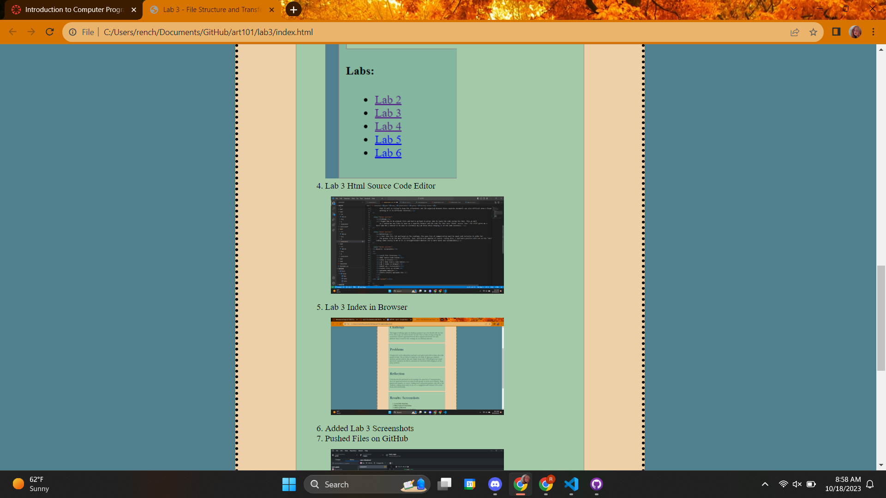
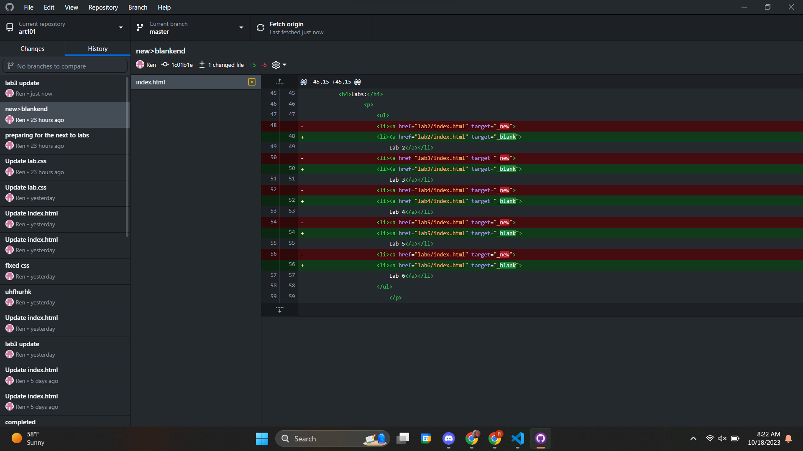
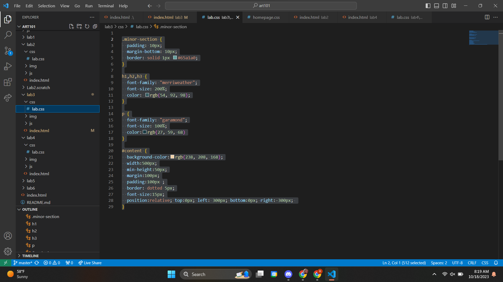

Lab 3 - File Structure and Transfer
Challenge
The biggest challenge again was finding a partner to go over the lab with me, but I was able to get one before the lab was due. His name is Nathan Kim. That as well as trying to keep the screenshots and lab organized between three separate documents was also difficult when I found myself working on it in different intervals.
Problems
I forgot how to do ordered lists and had to go back to prior labs to learn the code recipe for that. This as well as I wanted my new links to open up a separate browser and the code for that uses 'blank' versus 'new.' CSS still gives me a hard time but I wanted to be able to customize my Lab three while keeping it on the same aesthetic.
Reflection
I feel like this lab and based on the readings, the open line of communication must be equal and inclusive in order for the groups to be the most effective. That, paired with empathy of course. Coding wise, I need more practice with CSS as the 'skeleton' coding comes easily to me as it is straightforward whereas CSS is more loose and customizable.
Results: Screenshots
- Local File Structure 
- Html Source Code Editor 
- Index in Browser 
- Lab 3 Html Source Code Editor 
- Lab 3 Index in Browser 
- Added Lab 3 Screenshots 
- Pushed Files on GitHub 
- Uploaded Website
- [Extra Credit] Uploaded CSS 